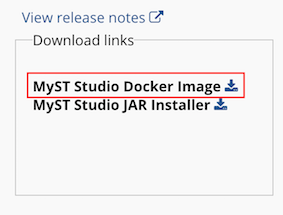

MyST Installation Guide
- Prerequisites
- Installation
- Providing Certificates for SSL
- Configuring Build Extensions
- Starting the MyST Studio Stack
- Configuring Maven for Automated Build of Oracle Middleware
- Offline Installation
Prerequisites
The following prerequisites should be in place on the server that will host MyST Studio prior to running the MyST installer.
- Java 1.6+ is installed.
- Docker 1.10+ and Docker Compose is installed.
- The MyST license tar.gz file must be available. This is provided when you sign up to try MyST Studio.
After the installation, internet access is required for the latest version of MyST to be pulled down directly from the public MyST Docker Registry.
If you are unable to use Docker, there are details on non-Docker installation here
Installation
The installation wizard can be kicked off by executing the jar installer using Java as follows:
java -jar <installer file>
If you need to run MyST Studio installer from the console (non-graphical), you can execute the following:
java -jar <installer file> -console
In the first step, you will be provided with an overview of the prerequisites.

In the next step, you will be asked to enter a path for the MyST Studio utilities. The standard convention is to installer under /opt/myst-studio however any path can be used.

In the next step, we can choose which packs we wish to install. At a minimum MyST Studio will be selected.

Optionally, you can choose:
- MyST Build Server: Pre-configured Build Server for use with MyST for if you don't already have one.
- MyST Artifact Repository: Pre-configured Maven Artifact Repository for if you don't already have one.
- Build Extension for Oracle Middleware: Enables automated build for applications build on SOA, BPM, OSB, ADF and other products related to Oracle Middleware. When you choose this, it will automatically select MyST Build Server if it is not already selected. The Build Extensions are currently supported for:
- 12.2.1.2.0
- 12.2.1.1.0
Click Next.
In the next step, you will be prompted to import the MyST license key. The file is provided when you sign up for MyST and is in a format similar to MyST-*.lic.tar.gz

Prior to April 2017, MyST users were provided with a separate api.key and MyST.lic file. In installers prior to 5.5.0.0, these had to be imported separately. If you do not have a tar.gz file but have api.key and MyST.lic you can compress them to a new tar.gz and use that for that installer.
You will be prompted to confirm installation. Click Next.

The installation should take only a second or two.

After the installation is successful, you will be prompted with the next steps to be performed.

If desired, you can generate a silent installation script which can be used to perform an installation silently.

Silent Installation
To run a silent installation you can execute the following:
java -jar <installer file> <response file>
Providing Certificates for SSL
By default, MyST Studio will boot up with demo SSL certificates, this may be ok for a development or sandbox environment but should not be used for production.
If you do not replace the demo certificates, you will get security warnings from your browser when you access the MyST Studio console.
To update the certificates, replace the demo certificates at the following locations with your real certificates:
- conf/data/nginx/ssl/cert.crt
- conf/data/nginx/ssl/cert.key
Warning
If you have already started the MyST Studio stack, you must force a rebuild of the data container when you restart the stack, this can be done with the following command.
./bin/start.sh -uIf you are yet to start the stack, please continue on to the next steps. MyST will automatically build the data container on the first start.
Configuring Build Extensions
If you choose the Build Extensions for Oracle Middleware then you will need to download Oracle installers and place them in the MyST home at the following locations depending on the versions you chose
| Version | File |
|---|---|
| All | conf/fmw/context/jdk/jdk-8u121-linux-x64.tar.gz |
| 12.2.1.2.0 | conf/fmw/context/12.2.1.2.0/installers/fmw_12.2.1.2.0_infrastructure.jar |
| 12.2.1.2.0 | conf/fmw/context/12.2.1.2.0/installers/fmw_12.2.1.2.0_osb.jar |
| 12.2.1.2.0 | conf/fmw/context/12.2.1.2.0/installers/fmw_12.2.1.2.0_soa.jar |
| 12.2.1.1.0 | conf/fmw/context/12.2.1.1.0/installers/fmw_12.2.1.2.0_infrastructure.jar |
| 12.2.1.1.0 | conf/fmw/context/12.2.1.1.0/installers/fmw_12.2.1.2.0_osb.jar |
| 12.2.1.1.0 | conf/fmw/context/12.2.1.1.0/installers/fmw_12.2.1.2.0_soa.jar |
Once the Oracle installers are placed in the desired locations, you will need to build the FMW extensions by executing the following:
./bin/build-fmw-extensions.sh
Starting the MyST Studio Stack
After the successful installation navigate to the MyST Studio home (in our example, /opt/myst-studio) and execute the following:
cd /opt/myst-studio/bin
./start.sh
Once the start.sh has completed you should be able to access the MyST Studio console at https://<your host>/console.
You can see the details of your running instances by executing docker ps from the command line.
Configuring Maven for Automated Build of Oracle Middleware
If you choose Build Extensions for Oracle Middleware when installing MyST, Maven must be configured on the build server, before you can build applications to run on products such as SOA, BPM, OSB and ADF. This can be done by simply executing the following from the MyST Studio home:
cd bin
./configure-maven.sh
If you skipped the post-installation steps documented in the section on Configuring the Build Extensions the above command will not succeed.
Offline Installation
It is highly recommended that proxied internet access be available for the MyST server. This allows for easy upgrade of MyST by simplify specifying a version number to download (e.g. ./upgrade.sh 5.5.0.0). In an event that MyST Studio does not have internet access, you will need to download the required MyST Studio Docker Images from a host with internet access and then copy them to the MyST Server before executing the start.sh or upgrade.sh. Depending on whether you choose "MyST Build Server" and "MyST Artifact Repository", there may be multiple Docker images that need to be downloaded and copied to the server.
MyST Studio (Offline)
The MyST Studio Docker Image can be downloaded from the MyST website.

After downloading the MyST Studio installer from the website, copy it to the MyST host and execute the following
gunzip myst-studio-docker-image-5.5.0.0.tar.gz
sudo docker load -i myst-studio-docker-image-5.5.0.0.tar
docker tag docker-registry.rubiconred.aws:5000/myst-studio:5.5.0.0 myst-studio
Make sure that you replace the above version details to correspond to that version of MyST that was downloaded.
MyST Build Server (Offline)
If you are planning to use MyST Build Server on a host without internet access, from a host with internet access and Docker installed run the following:
docker pull jenkins
docker save jenkins > myst-build-base.tar
Then copy the myst-build-base.tar to the MyST host and execute the following:
docker load -i myst-build-base.tar
MyST Artifact Repository (Offline)
If you are planning to use MyST Artifact Repository on a host without internet access, from a host with internet access and Docker + MyST installed run the following:
/opt/myst-studio/bin/pull.sh
docker save maven-repository > maven-repository.tar
Then copy the maven-repository.tar to the MyST host and execute the following:
docker load -i maven-repository.tar
Build Extensions for Oracle Middleware (Offline)
If you are planning to use MyST Artifact Repository on a host without internet access, from a host with internet access and Docker + MyST installed run the following:
docker pull oraclelinux:7
docker save oraclelinux:7 > oracle-linux.tar
Then copy the oracle-linux.tar to the MyST host and execute the following:
docker load -i oracle-linux.tar